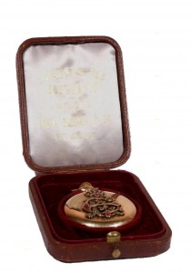

© Muzeul Național Peleș


 printați
printați
+40244 310 918 |
peles.ro@gmail.com |
Colecția de orologerie
Alcătuită din peste cincizeci de piese, variate ca tipologie și stil, ceasurile colecției de orologerie a Muzeului National Peleș provin din colecția regala; cele mai multe piese au fost achiziționate de catre Regele Carol I al României, cunoscut pentru punctualitatea sa. Colecția cuprinde însă și ceasuri ale Reginei Maria, ale Regelui Carol al II-lea și un ceas primit de Regele Mihai.
Ceasurile sunt diverse ca tipologie, acoperind o gama larga de modele, de la ceasurile pendule – de podea și de perete – pana la ceasurile – cartel, ceasurile miniaturale sau ceasurile de consola, de șemineu și de masa; colecția cuprinde de asemenea, câteva ceasuri deșteptătoare și de buzunar. Cronologic, piesele de orologerie se încadrează intre secolele XVIII – XX, majoritatea datând de la sfârșitul secolului al XIX-lea. Stilistic, cele mai multe piese aparțin corețului istorist în variantele Renașterii germane și italiene, barocului german, rococo-ului și neoclasicismului, Empire-ului și stilului Art Nouveau. |
Fabricat de celebra firma de orologerie, Philippe Patek din Geneva, după 1881 ceasul de buzunar al primului Rege al României reprezinta o comanda speciala, extrem de valoroasa atât datorita mărcii, cat și carcasei din aur masiv, gravata pe capacul avers cu monograma ,, E.C.’’, surmontata de coroana închisa și incrustata în diamante și rubine.
Cravașa cu ceas i-a aparținut tot Regelui Carol I, care a achiziționat-o la începutul secolului al XX-lea. Confecționata din lemn, cu mâner îmbrăcat în argint, decorata cu coroana regala, cravașa este prevăzută în mod ingenios cu un ceas minuscul, firma Patent, cu cadran circular și cifre romane în email negru.
Realizat de catre atelierele Aron Herscovici, ceasul de masa în placa de bronz de forma dreptunghiulara, încadrat în caseta, în forma de triptic, are valoare documentara datorita trimiterii la un eveniment istoric marcant, constituit de revenirea pe tronul României a Regelui Carol al II-lea la 8 iunie 1930, conform inscripției de sub cadran și a monogramei surmontate de coroana regala, executate după desenele lui A. Bordenache.
Fabricat în 1936, în Romania, cu rama și soclu din crom turnat, cu cadran mobil de forma dreptunghiulara, cu latura superioara arcuita și cadran susținut de doi suporți cilindrici din lemn lăcuit, ceasul de masa, gravat pe suport cu inscripția ,, 8 . XI. 936 VANATORII DE LA AL 2 LEA DE MUNTE’’ reprezinta un cadou primit de catre Regele Mihai cu ocazia zilei sale onomastice și în același timp, unicul ceas din colecția Muzeului National Peleș care i-a aparținut ultimului suveran al României.
Ponderea cea mai însemnata din întreaga colecție o au ceasurile fabricate în Germania și Austria (peste treizeci de piese), aspect justificat nu doar prin originea dinastiei regale, cat mai ales prin avântul deosebit pe care îl cunoaște la mijlocul secolului al XIX-lea domeniul în discuție în regiunea Munții Pădurea Neagra, locul de origine al Regelui Carol I. în jurul anului 1870, în sudul Germaniei își fac timid apariția câteva ateliere și fabrici de ceasornice, precum cele conduse de Gustav Becker, atelierul Jungian sau cel de la Lenzkirch, indubitabil inferioare ca precizie ceasurilor consacrate de epoca Biedermeier, dar mult mai la îndemâna cumpărătorului obișnuit.
Eclipsate temporar de producțiile englezești și franceze, centrele de orologerie din regiunea Munții Pădurea Neagra își câștiga treptat originalitatea. Ele abordează toata gama tipologica existenta, dar se specializează în fabricația de ceasuri cu cuc și de ceasuri muzicale, cărora le imprima accente rustice autohtone, la nivelul decorației carcaselor.
Deși fidel tradiției germane, sub semnul căreia a așezat întregul proiect arhitectonic și decorativ al reședinței de vara de la Sinaia, Regele Carol a abordat în materie de orologerie producția ,,nobila” a epocii, piesele ,,de curte”, mai precis, acele tipologii inspirate de recurenta modelelor istoriste.
Ceasul, ca marca a civilizației occidentale, face parte din decorația interioara a castelului, fie prin înglobarea sa în mobilierul în fix, ca parte integranta a acestuia, fie prin amplasarea lui ca obiect de sine stătător, atât în spațiul oficial, cat și în cel privat al curții regale.
Pe latura vestica a Holului de onoare, la nivelul nobil al castelului, arhitectul ceh K. Liman și colaboratorul sau vienez, B. Ludwig au proiectat spațioasa și liniștita Biblioteca a oaspeților, încadrata de copia scării Primăriei din Bremenn, și de loja catolica, prevăzută cu ceas. Ceasul măsoară nu numai orele de lucru, cat și pe cele dedicate loisir-ului: la începutul secolului al XX-lea, Carol I dispune construirea pe latura de sud-vest a Salii de biliard, unde își exersează cel mai drag dintre hobby-uri, alături de persoanele apropiate, de arhitecți sau de oaspeții de seama. Decorata în stilul neo-Renașterii germane, Sala înglobează în decorația în fix un ceas cu cadran elegant, amplasat în centrul frontonului frânt, deasupra ușii ce comunică cu Sala de șah.
Daca în aceste cazuri, ceasul este un accesoriu – ce-i drept, indispensabil -, iar designerii, avizați creatori de carcase, prelungire a decorațiunii interioare, atunci ceasul din turn reprezinta o piesa unica, de mare valoare istorica. Fabricat în anul 1907 de catre decorațiunii Bayerische Hof-Thurmuhren-Fabrik Johann Mannhardt (Fabrica de ceasuri de turn a Curții regale din Bavaria) poarta numele ceasornicarului, inventatorului și mecanicului, Johann Mannhardt (1798 – 1878), cel care a înființat-o în anul 1844. în același an, Mannhardt se muta în capitala Regatului bavarez, unde datorita seriozității sale intra în vizorul Curții și a regelui Ludwig I, personal, care ii apreciază deopotrivă calitățile sale de ceasornicar și de inventator. Excelenta însă i-o aduc ceasurile de turn, pentru care primește comenzi din întreaga Europa și chiar din Statele Unite. Una dintre cele mai însemnate comenzi pentru România a fost ceasul mecanic din turnul Bisericii Negre din Brașov. Moartea sa prematura, survenita în anul 1878, pune capăt unui destin exemplar. în semn de recunoaștere, Fabrica ii poarta numele pana în anul 1928, an în care este preluata de o alta firma bavareza, Turmuhrenfabrik Philipp Hörz (Fabrica de ceasuri de turn Philipp Hörz) din Ulm. Creata în anul 1862 de catre ceasornicarul Philipp Hörz, cunoaște o dezvoltare spectaculoasa, primind în anul 1877 brevetul de furnizoare a Casei princiare de Hohenzollern, respectiv a Principelui Karl Anton, tatăl Regelui Carol I și prim-ministru al Prusiei în perioada 1857 – 1862.
Ceasul cu bătaie la fiecare 15 minute din turnul principal al castelului Peleș este un ceas mecanic, cu trei cadrane decorate cu simbolurile astrale principale. Cadranele sunt orientate catre trei puncte cardinale, sud, est și vest. Mecanismul poarta inscripționata marca Fabricii Johann Mannhardt și anul fabricației. |
 |
în intervalul 1922 – 1933, urmașii săi la tron ii încredințează același rol ceasornicarului Meronovic, ale cărui semnături olografe se mai pot descifra și astăzi lângă mecanismul ceasului.
Cele mai importante firme germane și austriece de ceasornicărie, pe care Regele Carol I le-a contactat în vederea achiziționării de piese de orologerie pentru reședința sa de vara sunt Gustav Becker, Carl Werner, J. Jagemann, J. Volkenstein și Kienzle.
Unul dintre cei mai cunoscuți fabricanți de ceasuri din Germania de la sfârșitul secolului al XIX-lea, Gustav Becker apare cu un ceas rotativ (marin), fabricat la începutul secolului al XX-lea, piesa singulara ca tipologie în colecția castelului Peleș.
Dupa ani de ucenicie în Germania și Austria, Becker deschide în 1850 un mic atelier la Freiburg. Succesul nu-l ocolește și doi ani mai târziu, obține medalia de aur la Târgul expozițional din Silezia. Câștiga numeroase medalii și premii și devine curând faimos în întreaga lume. Pana la 1880, firma Becker este specializata exclusiv în ceasuri de perete, apoi își diversifica producția la peste 400 modele. Atelierul sau primește comenzi pana în 1935, când Compania Jungian – care funcționează și azi – înglobează firmele Becker și Lenzkirch.
Daca secolul al XVIII-lea pare mai puțin interesat de precizie și mai mult de valoarea de opera de arta a ceasului, secolul următor inclina balanța în favoarea performantelor de ordin tehnic, fără a neglija însă amănuntele privitoare la estetica. Conformând-se gustului epocii sale, Regele Carol I comanda atelierelor de ceramica Meissen, Rosenthal, Schirholtz și Lönitz carcase în stil neo-rococco și neo-baroc pentru mecanismele realizate de ateliere germane celebre de ceasornicărie.
în cadrul colecției, un segment important îl reprezinta cele zece ceasuri franceze, variate ca stil și material, dintre care se detașează trei piese de orologerie, importante prin mărcile celebre de ceasornicari: Samuel Marti, A.D. Maugin și Commun& Manceau.
Samuel Marti-Cie reprezinta marca unor celebri ceasornicari de origine elvețiana, stabiliți la mijlocul secolului al XVIII-lea, în capitala Franței. La 1863, Marti se asociază cu alți doi ceasornicari cunoscuți, Roux și Japy Frères. Impreuna dau naștere unei adevarate producții de piese de orologerie. Relativ rapid, atelierul înființat de Samuel Marti ajunge sa realizeze cele mai competitive mecanisme de ceasuri din Franța secolului al XIX-lea și obține numeroase premii drept recunoaștere a performantelor sale. în 1880, lui Samuel Marti ii este conferita o medalie de bronz, iar în 1889, medalia de argint. Încununarea vine în cadrul Expoziției Universale de la Paris din 1900, când atelierul își adaugă printre trofee mult râvnita medalie de aur, iar în 1931, Marele Premiu. Firma colaborează cu manufacturi de porțelan ca Sevrès, cu argintari și aurari faimoși. La începutul secolului al XX-lea, atelierul începe o colaborare fructuoasa cu celebrul designer american, Louis Confort Tiffany, care pe lângă consacratele piese din sticla irizata cunoscuta sub numele de sticla Favrille, lampi și bijuterii, se angajează și în decorarea mecanismelor de ceasornice.
La Castelul Peleș, în Camera galbena sau Apartamentul primului-ministru se păstrează o eleganta piesa de orologerie, mai precis, un ceas de masa, al cărui mecanism este inscripționat în limba franceza ,,Samuel Marti. Medaille d’or. Paris. 1900”. Carcasa reprezinta un personaj feminin mitologic drapat, cu șarpe și oglinda, probabil o întruchipare neoclasica a zeiței Venus, sprijinita grațios pe cadranul circular al ceasului. Postamentul dublu din marmura alba și bronz, decorat cu val grecesc trădează influente ale stilului târziu Ludovic al XVI-lea.
Una dintre cele mai realizate piese de orologerie din punct de vedere artistic din colecția regala este ceasul de șemineu, al cărui mecanism cu discuri rotative a fost realizat de celebrul atelier parizian, A.D. Mougin. Carcasa din biscuit de Sèvres, reprezentând ,,Cele trei gratii” este o replica de secol XIX după un grup statuar realizat un secol mai devreme de catre Falconet.
A.D. Mougin obține doua medalii de excelenta și concurează în permanenta cu atelierul lui Samuel Marti&Cie. Mai puțin celebru, atelierul Commun-Manceau din capitala Franței s-a specializat în mecanisme pentru servicii de șemineu, cu carcase istoriste. Castelul Peleș deține în patrimoniul sau de orologerie un interesant serviciu de șemineu, unic ca abordare stilistica. Inspirat de stilul Retour d’Egypte ceasul din metal comun și soclu de marmura neagra, are corpul piramidal, sprijinit pe doi sfincși andosați și este decorat cu zeități, animale sacre și hieroglife egiptene. Cele doua sfeșnice, în forma de obelisc sunt decorate cu hieroglife și terminate cu capete de faraoni.
Salonul mic al Apartamentului imperial din Castelul Peleș, adaposteste o piesa originala valoroasa, un birou cu rulou de la mijlocul secolului al XVIII-lea, din lemn furniruit cu esențe exotice, decorat cu motive Régence din bronz aurit, a cărui balustrada este suplimentata cu un ceas în cutie de lemn, prevăzut cu barometru posterior, surmontat de bust feminin din bronz, în costumația perioadei Louis d’Orléans.
Varianta istorista a stilului neoclasic este reprezentata în colecția Castelului Peleș printr-un frumos serviciu de șemineu din porțelan albastru de Sèvres cu sublinieri din aur, alcatuit din ceas cu soclu circular, care înglobează mecanismul, pe care, într-o atitudine jucăușa sta un Cupidon înaripat, cu trompeta. Cele doua sfeșnice figurează doi Cupidon, ce susțin bobesa.
Orologeria franceza neo-Empire este prezenta în patrimoniul muzeului datorita unui ceas de masa cu pendul, care întregește decorația Salonului mare al Apartamentului Josephinei de Baden situat la ,,etajul nobil” al castelului Peleș. Combinație de marmura și bronz aurit, în forma de pavilion, surmontata de un vultur în ronde-bosse, cu aripile deschise, simbolul puterii imperiale a lui Napoleon I, este piesa de orologerie, cea mai apropiata ca reprezentare artistica de stilul original.
Ceasul de masa aflat în Dormitorul Castelului Pelișor, reședința cuplului Ferdinand – Maria, face parte dintr-un serviciu de masa, alături de doua vaze pentru flori. Carcasa ceasului, executata din faianța policroma, de catre atelierul Edmé Samson din Paris, în maniera olandeza a manufacturii Rosenburg din Haga, reprezinta un exemplu clasic de design Art Nouveau, datorita formei ondulatorii și decorului floral și avimorf în cromatica de verde și maron.
Spre deosebire de alte spatii europene, ceasornicăria engleza nu se cantonează în producția de lux și de export. Concomitent sunt fabricate pe scara larga ceasuri de uz curent. Din a doua jumătate a secolului al XVIII-lea, se dezvolta comerțul cu Imperiul otoman. Cei mai fervenți exportatori de ceasuri catre lumea otomana sunt Edward (cca 1820 – 1868) și George Prior: ei exporta mii de ceasuri catre Turcia în schimbul unor produse exotice. Dupa despărțirea de George Prior, Edward Prior, unul dintre cei mai celebri ceasornicari londonezi, se asociază cu William Chambers (1830 – 1875) intensificând producția de ceasuri de export. Cea mai importanta comanda primita de către Edward Prior a fost pendula de podea fabricata pentru Moscheea lui Ahmed din Constantinopol. |
In colecția de orologerie a Muzeului National Peleș, se păstrează doua ceasuri de buzunar create de Edward Prior, ambele din argint, cu cadran emailat în alb, pictat cu cifre turcești, datând de la sfârșitul secolului al XVIII-lea, care au aparținut regelui Carol I. Ceasul de masa cu pendul din bronz patinat și aurit, pe soclu din marmura, creat de catre firma londoneza Werheimer este una dintre piesele cele mai rafinate ale colecției: cadranul din email al ceasului este susținut de un elegant picior în forma de coloana canelata. Sprijinit de cadran se afla un Cupidon sagalnic cu arc și ghirlande florale.
Variata ca tipologie, suport și calitate, colecția regala de la Sinaia reflecta fluctuațiile și căutările unei lumi, care ezita intre istorism și modernitatea Artei 1900, dar care își asuma treptat ideea de schimbare și de progres tehnologic.